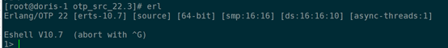
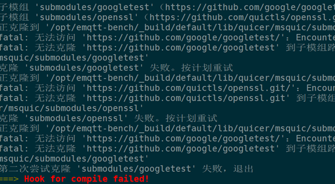

emqtt_bench安装与压测MQTTbroker
EMQX
EMQ X (Erlang/Enterprise/Elastic MQTT Broker) 是基于 Erlang/OTP 平台开发的开源物联网 MQTT 消息服务器。
Erlang/OTP是出色的软实时 (Soft-Realtime)、低延时 (Low-Latency)、分布式 (Distributed)的语言平台。
MQTT 是轻量的 (Lightweight)、发布订阅模式 (PubSub) 的物联网消息协议。
EMQ X 设计目标是实现高可靠，并支持承载海量物联网终端的MQTT连接，支持在海量物联网设备间低延时消息路由:
- 稳定承载大规模的 MQTT 客户端连接，单服务器节点支持50万到100万连接。
- 分布式节点集群，快速低延时的消息路由，单集群支持1000万规模的路由。
- 消息服务器内扩展，支持定制多种认证方式、高效存储消息到后端数据库。
- 完整物联网协议支持，MQTT、MQTT-SN、CoAP、LwM2M、WebSocket 或私有协议支持。
emqtt_bench
emqtt_bench (opens new window)是基于 Erlang 编写的，一个简洁强大的 MQTT 协议性能测试工具。
EMQX安装
emqx安装比较简单，可以参照安装 | EMQ Docs (emqx.cn)进行。
emqtt_bench安装
结合官网介绍需要 Erlang/OTP 22.3+以上，但是经过尝试最新版的Erlang不太兼容，所以还是老老实实用22.3了。
1.前提准备
1 | 各种依赖，缺乏可能会导致意外问题 |
2.安装Erlang 22.3
1 | # 切换到安装目录此处建议用opt文件夹 |

3.安装新版git（因后续在emqtt_bench make时centos7自带git版本较低导致问题）
1 | # 更新系统资源包 |
4.安装emqtt_bench
1 | 安装依赖 |
输出Usage: emqtt_bench pub | sub | conn [–help]即为安装成功
总结
安装中遇到的问题有以下两个
1.make失败（报错GUN版本）
经排查此问题为QUIC功能不能使用导致，使用禁用模式make即可
2.有部分git资源下载失败

cd /opt/emqtt-bench/_build/default/lib/quicer/msquic/submodules
git clone git://github.com/google/googletest
使用
emqtt_bench 共三个子命令：
pub：用于创建大量客户端执行发布消息的操作。sub：用于创建大量客户端执行订阅主题，并接受消息的操作。conn：用于创建大量的连接
参数
| 参数 | 简写 | 可选值 | 默认值 | 说明 |
|---|---|---|---|---|
| –host | -h | - | localhost | 要连接的 MQTT 服务器地址 |
| –port | -p | - | 1883 | MQTT 服务端口 |
| –version | -V | 3 4 5 | 5 | 使用的 MQTT 协议版本 |
| –count | -c | - | 200 | 客户端总数 |
| –startnumber | -n | - | 0 | 客户端数量起始值 |
| –interval | -i | - | 10 | 每间隔多少时间创建一个客户端；单位：毫秒 |
| –interval_of_msg | -I | - | 1000 | 每间隔多少时间发送一个消息 |
| –username | -u | - | 无；非必选 | 客户端用户名 |
| –password | -P | - | 无；非必选 | 客户端密码 |
| –topic | -t | - | 无；必选 | 发布的主题；支持站位符： %c：表示 ClientId %u：表示 Username %i：表示客户端的序列数 |
| –szie | -s | - | 256 | 消息 Payload 的大小；单位：字节 |
| –qos | -q | - | 0 | Qos 等级 |
| –retain | -r | true false | false | 消息是否设置 Retain 标志 |
| –keepalive | -k | - | 300 | 客户端心跳时间 |
| –clean | -C | true false | true | 是否以清除会话的方式建立连接 |
| –ssl | -S | true false | false | 是否启用 SSL |
| –certfile | - | - | 无 | 客户端 SSL 证书 |
| –keyfile | - | - | 无 | 客户端 SSL 秘钥文件 |
| –ws | - | true false | false | 是否以 Websocket 的方式建立连接 |
| –ifaddr | - | - | 无 | 指定客户端连接使用的本地网卡 |
吞吐量性能压测
bench1上执行
1 | ./emqtt_bench sub -t t -h EMQQserverIP -c 500 |
bench2 上执行
1 | ./emqtt_bench pub -t t -h EMQQserverIP -c 20 -I 100 |
在bench1上可以观察到
ecv(28006): total=2102563, rate=99725(msg/sec）